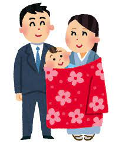

| 祝い事 | 日時 |
|---|---|
| お七夜 | {{o.date()}} |
| お宮参り | 男の子:{{hb.date()}}女の子:{{hg.date()}} |
| 百日・お食い初め | {{m.date()}} |
| ハーフバースデー | {{hbd.date()}} |
| 初誕生日 | {{bd.date()}} |
| 初節句 | 男の子:{{sk}}-5-5 |
| 初節句 | 女の子:{{sk}}-3-3 |
| 髪置き・七五三３歳 | {{km}}-11-15 |
| 紐解き | {{ht}}-11-15 |
| 七五三5歳 | {{go}}-11-15 |
| 七五三7歳 | {{na}}-11-15 |
| 小学校入学 | {{jhs}}-4-1 |
全国にはこどもの成長を祝ういろいろな催しがあります。
こちらでは熊本ならではの風習も含め行事をご紹介します。
お七夜
お七夜は誕生後七日目のお祝いです。熊本の場合、名付けはサンガニチ（三日目）にやることが多かったようです。 サンガニチの祝いは「カミタテ」「テヌキ祝い」などとも呼ばれ、小豆ご飯を炊いて祝いました。 このご飯を「カミタテメシ」といい、赤ちゃんの枕に入れた小豆を少し出して炊き、茶碗に高く盛って神棚にお供えしたといいます。
お宮参りは、赤ちゃんが生まれて初めて神社にお参りすることを言います。熊本では「日明き」と言い、同じ県内でも地域によって 異なりますが、だいたい男児の場合は生後三十一日で、女児は三十一日か三十二日というところが多いようです。
お宮参り
お食い初め
生後、百日目に身内が集まって赤ちゃんにご飯を食べさせるまねごとをして、成長を喜ぶのが”お食い初め”です。 熊本では百日（ももか）の祝いとは言いながら、百十日目（八代）、百二十日目（鹿本・下益城）、と地域によって祝う日もまちまちのようです。
ハーフバースデーは欧米の風習が由来となっています。学校の長期休み中に誕生日を迎える子はお友達にお祝いしてもらえないので、誕生日の半年前もしくは半年後にお祝いをしようという習慣があります。 それが日本では生後半年を迎えた赤ちゃんの成長をお祝いしようという独自の意味で広がり、徐々に定着していったようです。
ハーフバースデー
初誕生日
日本では死者の命日は重視しますが、個人の誕生日を祝う習慣はありませんでありませんでした。 しかし、初誕生日だけは、餅をつき赤飯を炊き、親戚を招いて無事に人生の最初の一年を送ることが出来た 我が子を祝いました。そして、歩き始めた子には、一升の米や餅を背負わせる「かわらせ餅」をします。 これはどこの地方でも見られる風習です。
赤ちゃんが初めて迎える節句が「初節句」です。男の子は五月五日の端午の節句、女の子なら三月三日の桃の節句に 身近な人たちを招いてお祝いをします。しかし生後まもなく初節句を迎えるような場合は、翌年にまわしても構いません。
初節句
七五三
昔は男女ともに三歳になると「髪置」と言って髪を伸ばし始め、男児は五歳になると「袴着の祝い」 をして男の衣装をつけ、女児は七歳で「帯祝い」をして付け紐を取って帯を締めました。 七五三は武家社会の中から起こった風習で、子どもの成長と健康、厄除けなどを祈ってお祝いする行事です。 熊本では、昔から男女児とも数え年の三つで「髪置き」、四つで「紐解き」のお祝いをするところが多いようです。
子どもが着物の付け紐をとり，はじめて帯を結ぶ儀式です。 幼児から子どもへの通過儀礼として多く行われ，帯を結ぶことで新しい成長段階に達したことを表しています。 熊本では男女児とも数え年の四つで行います。理由は定かではありませんが、子どもの死亡率の高かった昔において、早めに祝ってあげたいという、親心の現れではないかとも言われています。
紐解き
小学校入学
新しい学校に入り人生の新しいステージに立つ新入生にとって、入学式は人生の新しい区切りを意味します。 真新しい制服を着た生徒達が新しい年度の始まりに学校に向かう姿は、桜の花とともに春の風物となっています。